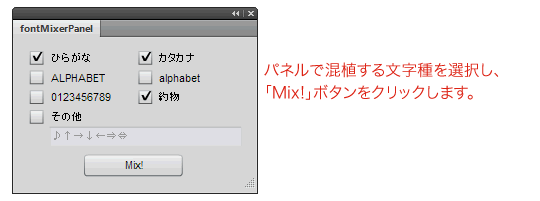

この記事は、Font Mixer 1.0.0を公開した時のものです。
Fireworksの混植拡張機能「Font Mixer」を作成しました。
Fireworksで和文フォント×和文フォントの混植をする場合、フォントを変更したいテキストを選択しフォントを変更という作業を繰り返す必要があり、非常に手間がかかってしまいます。この手間を大幅に軽減する、Fireworks拡張機能を作成しました。
CS3以上のFireworksに対応、OSX・Windowsともに動作します。スクリプトをのぞかれると恥ずかしい限りですが、こんな風に書いた方がいいんじゃね？とか、うまく行かないところがあれば、@littlebustersまでお願いします！
Fireworksで混植ができるFont Mixer［Fireworks拡張機能］
Font Mixerの主な機能x
- 2種類のフォントを混植できます。
- 変更するフォントの対象を、ひらがな・カタカナ・アルファベット大文字/小文字・数字・約物の6種類と、任意の文字から選択することができます。
Font Mixerでできないこと
フォントの大きさやベースラインなどの細かな調整はできません。新バージョンではできるようになりました。- 3種類の和文フォントを混植するために、これを2回実行しても3種類の混植はできません。
Font Mixerの使い方
この例では、ゴシックMB101DBと見出しミンMA1の混植をしてみます。まずは、混植するテキストオブジェクトを複製します。
複製したテキストオブジェクトのフォントを、混植したいフォント（見出しミンMA1）へ変更します。ただし、欧文を混植する場合は、複製したテキストオブジェクトの文頭が欧文になるようにしてください。
コピペ元とコピペしたテキストオブジェクトの2つ選択します。
「ウィンドウ」メニューから「fontMixerPanel」を表示します。パネル内の混植する文字種にチェックを入れ、「Mix!」ボタンをクリックしてください。

無事、2種類のフォントで混植ができました。（複製したテキストオブジェクトは削除されます）
混植する上での注意点
- 複製元のテキストオブジェクトの文頭にあるフォント情報がベースとなりますので、サイズやベースライン等の設定がすべてこれに統一されます。
- 和文フォントへ欧文フォントを混植する場合、ひらがな・カタカナをチェックしたまま混植すると、ひらがな・カタカナへデバイスフォントが適用されてしまいます。
ちょっと詳しい説明
レイヤーパレットで、深度が浅い（上にある）テキストオブジェクトのフォント情報を、深度の深い（下にある）テキストオブジェクトへ適用しています。
Fireworksの場合、テキストオブジェクトとその中の文字自体にフォント情報を持っています。
Font Mixerでは、複製したテキストオブジェクトのフォント情報（fontface）のみを使用しているため、その内容やフォントサイズなどは無視されます。欧文を混植する場合に、文頭を欧文にする必要があるのも、このためです。
まぁあれです、Illustratorで作成できる「合成フォント」が、そのままFireworksで使用できればいいんですけどね…Adobeさん、お願いします。